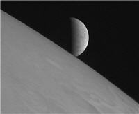
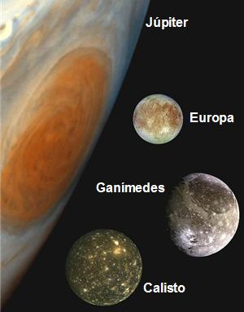

Extraterrestres y una luna de Júpiter: Parte 1
Desde hace muchos años, desde la época de los filósofos griegos, ya se hablaba de la existencia de otros mundos poblados. Sin embargo, durante gran parte de esta era, hablar de vida en mundos distintos a la tierra era aberrante y contrario a la Iglesia (al menos en Occidente).
Buena prueba de ello es la historia de Giordano Bruno y su trágica muerte en la hoguera, lo que ha hecho que algunos lo consideren el primer ‘mártir de la ciencia’.
(Nota: Giordano Bruno (1548-1600) fue un filósofo, monje, ocultista y cosmólogo italiano. Propuso que el universo era infinito y homogéneo, lo que implica la existencia de muchos mundos similares a la Tierra. Por no retractarse de esta afirmación, base de su filosofía, fue condenado y llevado a la hoguera por la Inquisición en Roma.)
Cuatro siglos más tarde, el avance en el conocimiento humano ha demostrado que Giordano Bruno estaba cerca de la verdad: Existen infinidad de estrellas en el universo, y con bastante probabilidad muchos de ellas son orbitadas por planetas. Si tienen vida o no, es una de las más importantes interrogantes por responder de nuestro tiempo.
Lo que los científicos tienen claro, es que, de existir vida inteligente (que sería lo más interesante de comprobar), lo más probable es que sea totalmente distinta a lo que conocemos.
Posibilidades para el origen de la vida en el universo
*La vida se ha originado en muchos lugares a la vez, bajo distintos principios químicos. Supone que la vida es un fenómeno común que aparece con cierta frecuencia en el universo.
*La vida tiene un solo lugar de origen, desde el cual se ha ido esparciendo en el universo. Esto es llamado panspermia, y se basa en la suposición de que la vida es algo excepcional que solamente ha surgido una vez.
*Una combinación de las anteriores.
Métodos para intentar localizar vida extraterrestre
Pueden clasificarse en dos grandes categorías:
*Búsqueda directa: En otras palabras ir hasta el lugar y verlo, ya sea con tripulación, o lo más probable, con la ayuda de una sonda. Ejemplo de esto son las actuales expediciones a Marte.
*Búsqueda indirecta: Analizar la luz de otros planetas, en busca de señales que indiquen la existencia de vida en ellos. Esto es posible utilizando la espectroscopia astronómica, la cual permite determinar la composición de la fuente de una señal electromagnética. La tecnología actual aún no permite analizar detectar las señales de planetas de tamaño similar a la Tierra.
*Una subdivisión de la búsqueda indirecta, es la escucha de señales artificiales. Se realiza bajo la suposición de que toda civilización tecnológica transmite información en forma de radiación electromagnética. El proyecto SETI se dedica a este tipo de búsqueda.
Vida extraterrestre en el Sistema Solar
Pero sin ir muy lejos (relativamente hablando), es posible que exista vida cerca de la Tierra. Algunos de los lugares en el Sistema Solar que pueden albergar vida son:
*Marte: Una reciente exploración por parte de una sonda que orbita Marte, encontró evidencia de la existencia de agua en abundancia hace 4,000 millones de años en ese planeta. Se piensa que hay bastantes posibilidades de que existiera (y exista) vida unicelular. Antes de eso, la sonda Phoenix al parecer encontró agua en la superficie del planeta.
*Mercurio: La expedición MESSENGER descubrió que en la exosfera de Mercurio existen grandes cantidades de agua.
*Saturno y Júpiter: Posiblemente habitados por animales flotantes, que habitarían en la atmósfera. Estos seres vivos, propuestos por Carl Sagan, estarían basados en amoníaco, en lugar de estar basados en agua como los organismos terrestres.
*Titán : Esta luna de Saturno, es la única luna conocida que posee una atmósfera significativa. Al parecer no tiene ningún océano, pero gracias a la sonda Huygens se han detectado pequeños lagos de hidrocarburos en la superficie (posiblemente metano o etano). Estos lagos son los primeros en ser descubiertos fuera de la Tierra.
*Venus: Recientemente, se ha especulado que existan microbios en las capas de nubes ubicadas a 50 kilómetros sobre la superficie. Esta hipótesis se originó en los extraños desequilibrios observables en la atmósfera venusina.
*Encélado, Ganímedes, Calisto y Europa: El primero es satélite de Saturno, los tres restantes de Júpiter, y tienen en común que es posible que exista un océano subterráneo en todos ellos.
–
En la segunda parte de este artículo comentaré un poco más sobre la posibilidad de vida en Europa, los planes que se están elaborando para explorar este satélite, y les traeré una excelente conferencia sobre la búsqueda de vida extraterrestre, por el físico y matemático Freeman Dyson.
Metadatos y acciones
 Temas: astronomía, ciencia, universo, vida ⋅
Para guardar: Enlace permanente a esta anotación.
Temas: astronomía, ciencia, universo, vida ⋅
Para guardar: Enlace permanente a esta anotación.
 Print This Post
Print This Post
Comentarios
Los comentarios están cerrados.
Categorías
Últimas 4 anotaciones
Últimas anotaciones en cada categoría

Divulgación
El dinero no fomenta la creatividad: Daniel Pink en TEDGlobal 2009

Inspiración
Los 30 no son los nuevos 20

Noticias
Ver tu mente en tiempo real: Christopher deCharms en TED 2008
![Música en la era digital [Animación]](../../../wp-content/themes/tma/images/featured/animation_04_2009_featured.jpg)
Ocio
Música en la era digital [Animación]
julio 28, 2008, 6:53 am
Información Bitacoras.com…
Si lo deseas, puedes hacer click para valorar este post en Bitacoras.com. Gracias….
noviembre 5, 2008, 11:39 am
esisten los extraterestres en biame un mensaje
febrero 27, 2009, 8:22 am
a mi me emociona la idea de vida en nuestro sisteme solar que bueno que alguien saque esta informacion les agradesgo me gusto mucho el articulo
septiembre 11, 2009, 11:06 pm
Existe vida en varias de las lunas de los llamados “gigantes gaseosos”.
julio 22, 2010, 3:29 pm
que son los extraterrestres y de donde son
octubre 6, 2010, 9:36 am
tonta lorena
octubre 29, 2010, 4:42 pm
que tonta que sos lorena
la verdad q me intereso !!
junio 11, 2011, 10:02 am
si hay seres superiores a nosotros y nos llevan 1000 años de evolucion,son seres muy evolucionados,y ellos avitan en ganimedes satelite de jupiter,son seres maravillosos,nosotros somos una sivilizacion muy atrazada ante ellos,ellos nos quieren ayudar,porque el fin de esta era se esta aproximando y es el proximo año 2012,los mayas,incas,jobos y la parte cientifica dan con este año que se aproxima,y si estoy de acuerdo con este canbio en este planeta hay mucha corruccion,maldad,juegan con la vida de los demas,por eso es que nuestro planeta pide urgentemente este canbio de generacion de era,para que abiten nuestro planeta seres mas evolucionados,y en nuestro universo hay muchos planetas avitados por seres inteligentes,tecnologias que no entendemos.
junio 19, 2012, 9:47 am
buuuuuuuuuuuu los extraterrester no existen lusers